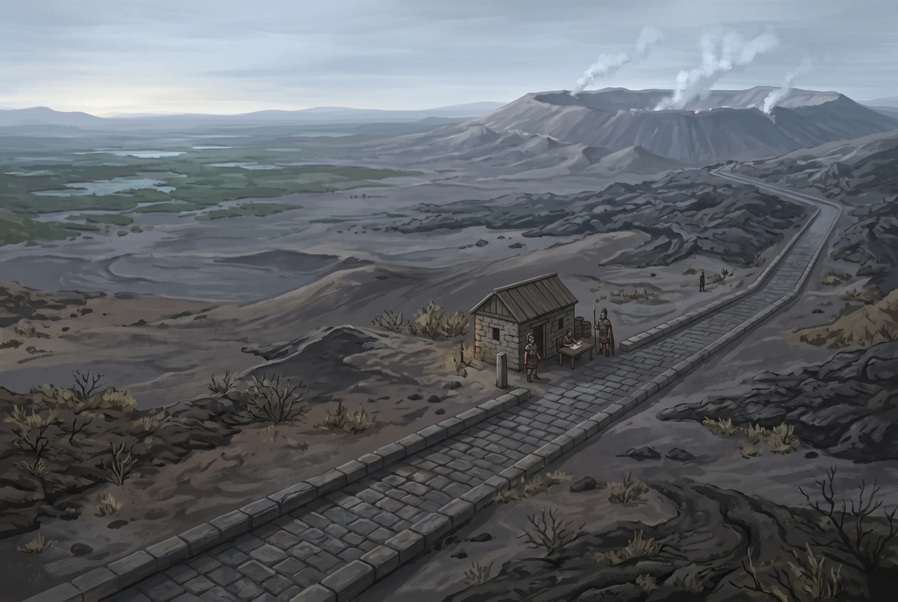

Buralia
Empire · capital Altiplano · a court that travels, seen only from its worst edge
Region: Buralia · Location: Waste Location detail: The volcanic march south and east of the fen, reaching far beyond this Atlas to the grass
Everything the Freeport region knows about Buralia it has learned from the western march, and the western march is to Buralia roughly what a quarry is to a country. A Freeport merchant will tell you Buralia means ash, thorn, tribes who take each other in war, obsidian, sulphur, and slaving. He is describing four hundred miles of frontier accurately and the empire not at all.
The Two Buralias
The march is what the map in this Atlas touches: volcanic country (cinder plain, ash flat, old lava, thorn) softening northward into the Weirden Fen, sixty miles of standing water that is worse. Neither supports a state. What lives out here is perhaps a dozen peoples who do not think of themselves as one people: fen-gatherers, glass-knappers, sulphur men, herders of the high ash, river clans. They trade constantly and several have been feuding longer than anyone has counted. Outside the one city, territory is held by whoever can hold it and passage is granted, bought or taken.
The heartland lies east and south, weeks away over ground nobody in Freeport has crossed, and it is not what a Freeport merchant pictures. It is grass: a dry high plain running to the horizon in every direction, cold at night, fierce by day, carrying herds nobody here has ever counted. Standing out of it are the mesas, red sandstone, and cut into the faces of those are the dwellings, tier on tier, reached by ladder and cut stair. That is where the empire keeps its records and its winter, and it is the one part of Buralia that is a place rather than a season.
Why There Is An Empire At All
Not because it is old. Buralia is a hundred and forty years old and does not pretend otherwise.
The Unmaking left the grass alone, because there was nothing on the grass worth unmaking. What survived out there was tribes: herders on a plain too big to hold, feuding at a scale that made none of them anything. What changed is that one of them stopped trying to hold ground and started moving.
The empire is not a territory. It is an itinerary. The Emperor travels, and the court travels with him: the whole retinue, the clerks, the herds, the cages, a moving city that arrives in a region, settles whatever is in front of it, and goes on. Opposition is crushed rather than negotiated, and where a people has been beaten a governor is left standing in the ash of the argument, holding exactly the authority he can enforce and no more. There is no appeal from a governor, because there is nothing above him nearer than the Emperor, and the Emperor is four hundred miles away and moving.
The court also leaves marriages. An Emperor with a great many children and a domain he cannot garrison places them the way he places governors, and the placements go into the ledger with the same care as the tribute. The one this region would care about, if it had noticed, is in Typpe.
He comes back to the mesas for the calving. Every year, without exception, the whole court turns for the heartland when the herds drop their young, and every year the regions he is not in learn again how much of the empire was the man standing in it.
The Records
For a country a hundred and forty years old, the paperwork is absurd.
Buralia keeps the best records in the known world, and the reason is the travelling. A court that arrives somewhere it last stood nine years ago cannot rule from memory. It must know what was taken last time, what was promised, who was left in charge, what he has sent since, what the herds were, who died. So the clerks count everything, and the count goes back to the mesas and into vaults cut in dry red rock where paper keeps for centuries without anybody doing anything clever, and the next time the court comes this way the ledger comes with it.
The civil service sits examinations on the contents. A dispute in Buralia is settled by looking it up. What the archive cannot do, and what an Altiplano clerk will tell you before you ask, is reach back past the founding: there is nothing in those vaults from before the first Emperor, because there was nobody keeping any.
It counts in things and not in sums. Head of cattle, weight of glass, tale of skins, sacks and hides and hulls, which suits an empire paid in kind and spares it a currency it has never wanted. Buralia has never struck a coin. A mint requires a building, and a court that travels does not put a building at the middle of itself. Below the tribute the march trades goods for goods and settles the remainder the way it settles everything, and what coin does circulate on this frontier is Freeport’s, at Mons and on the wharf at Intersang, because the ash country needs something a Mososi barge master will take. Foreign silver that reaches the heartland is entered as a weight. See Currency and Prices.
Faith, and the Talker
The Emperor is a Wildens prophet, and this is policy as much as belief.
The practice on arrival is fixed. The court does not suppress a conquered people’s gods. It adopts them: the local beast is honoured, its rites are kept, its priests are confirmed, and inside a generation the rite has acquired an imperial verse and the beast has acquired a place among the twelve. Nothing is forbidden and nothing is quite left alone either. Four generations of that is why a herder on the eastern grass and a sulphur man at Mons can both name the same twelve gods and disagree entirely about which one matters.
The Emperor himself is understood to be a talker to those above: a demi-god by common assent rather than by decree, and the man the twelve are held to answer when they answer anybody. He does not claim it in those words. He does not correct it either.
And he collects. The court travels with cages, and what is in them is elder beasts, taken alive at appalling cost from wherever the itinerary has reached: things off the blight fringes, things out of the deep grass, one thing nobody will describe. He walks the line of cages most evenings, alone, and talks to them. Clerks who have been near enough to hear report that he is not performing. What the animals are held to say back is not written down, which in that archive is conspicuous.
Forty-Seven Years
The march is the newest thing the empire owns, and it shows.
The first imperial column came up the road in 183 SU. Before that the frontier was what it had always been: a dozen peoples holding what they could hold, and one market at Mons where they had agreed not to. The Gards were already there, the Peace was already keeping, and the Clearing had been called three times, in 162, 169 and 176, by an order answering to nobody at all.
So the empire did here what it does everywhere. It did not abolish the Peace; it confirmed it. It did not authorise the Clearing; it declined to notice that it had never authorised it. Kroduk’s priests were confirmed in their office and an imperial verse turned up in the rite within a decade, and there are men on the ash roads who remember thinking that verse was an insult and who have since taught it to their grandchildren.
That is the difference between the march and everywhere else in Buralia. Forty-seven years is not four generations. The ash country still has its own gods under the imperial ones, its own arrangements under the imperial ledger, and its own people who were grown men before anyone out here had an Emperor. The heartland calls them Buralians. They mostly do not.
Slavery, and Two Different Regulators
Slaving is lawful throughout Buralia and is not controversial there. What differs is who governs it.
In the heartland it is imperial law: terms, prices, manumission, inheritance, and a governor. On the march it is the Clearing, which is older out here than the empire is: every seventh year the Gards call it and every slave in the region goes free on the day, wherever they were taken from and however recently. It is not emancipation and nobody there would use the word: it frees a man into exactly the country he was taken out of, and next season he may be taken again or come back holding somebody else’s rope. What it prevents is not slavery but permanence, because a tribe that could keep its takings forever would grow until it no longer needed Mons, and Mons would end.
The heartland finds the Clearing crude. The march would find imperial manumission law unenforceable and slightly mad. Both are correct.
Why The March Is Left Alone
Because the tribute arrives.
Every year a train goes east out of Mons carrying the frontier’s share: obsidian, sulphur, crystal, and whatever the fen has been persuaded to part with. It is counted at both ends and entered in the ledger. That is the whole of the empire’s presence here in an ordinary year, and it is sufficient, because a region that pays is a region the itinerary can skip.
The Emperor may come. He is entitled to and the rotation nominally includes the march. But a court of that size crossing four hundred miles of ash to visit a market it is already being paid by is an expensive way to make a point, so in practice he comes for one reason, and everybody on this frontier knows what it is. As long as the tribute flows, the emperor glows, they say out here, and they say it in the tone of men who have watched what happens when it stops.
The Blind Spot
Buralia refused the Conclave a concession at Spero and has gone on refusing it, politely, on a schedule, for as long as anyone has asked: a matter of sovereignty rather than of morals, and the one piece of the empire’s frontier policy that is a matter of public record.
What it did not refuse was a church. Twelve years ago the Pura Ecclesia asked leave to put a mission in the dry interior and offered a rent for the ground it would stand on, and the empire took the rent and accepted the distinction, which is thin. In the archive it is a line: mission concession, worthless district, paid punctually, in silver. Provincially it is understood that there is more behind that wall than a mission, and understood equally clearly that nobody is to write it in a report, because a report creates an obligation.
What nobody in the imperial administration knows is the labour: that the works is staffed by Nyssian subjects imported by sea and worked to death inside imperial territory by a foreign institution. That is not a moral problem to anyone concerned. It is a sovereignty problem, and a far worse one than the mana ever was: the day it is said aloud, Buralia stops being the landlord who charged rent and becomes the accomplice who was paid, holding a grievance it handed Nysis for nothing.
Heraldry
Gules, on a chief Or a mullet gules, in base a chain of seven links Or hung as a swag, the seventh broken
The red is the ash country, which is the only part of Buralia this region ever sees. The chain is what the empire is on its frontier, and the empire has never pretended otherwise. It hangs the way a chain hangs on a man and not the way a chain is laid out for inspection.
It is also a count rather than an ornament. Seven links, six of them closed and the seventh broken: the jubilee cycle, which is the archive’s word for it and which the archive can date to the year. Nobody on the march says jubilee. They say the Clearing, they say it in the seventh year, and Buralia regards that broken link as the whole of its moral argument against every neighbour who has ever raised the subject.
The gold band across the top is the grass, which is the country the empire actually comes from and the only ground it has never had to take. It runs the width of the arms because it runs to the horizon.
The star is the Emperor. It is drawn in the red of the sandstone he winters in, which is the same red the ash country is drawn in, and the heralds have never once agreed to separate the two. One country, one stone. Beyond that the design says what it means to say and nothing else: one charge on the band, no crown, no supporters, and a charge that moves across the field rather than sitting on a throne in the middle of it.
Set it beside Mososi, where the Direktor is one bed among nine and drawn the same size as the other eight. Buralia has never wanted that fiction and does not have the vocabulary to make it.
In Altiplano nobody looks at the chain, because in the heartland a manumission goes through a governor and everything below the band is a frontier idiom the clerks find slightly embarrassing. What a clerk will tell you about, at length and without being asked, is the band.
Motto: Not without danger.
Cut over the archive doors at Altiplano and set at the foot of every licence, concession and grant the empire issues, where it is not sentiment. It is a clause. The empire permits a thing; the empire does not indemnify it.
On the march it is read as a warning and the march takes it as one, because nothing out here is held safely and passage is granted, bought or taken. In the heartland it is read as a description of how the country got here, which is by riding out onto a plain that had beaten everyone who tried to hold it and not stopping. The Spero concession carries the clause at the foot of it. Twelve years of rent have arrived punctually underneath it and nobody at the capital has ever read it as anything but a form of words.